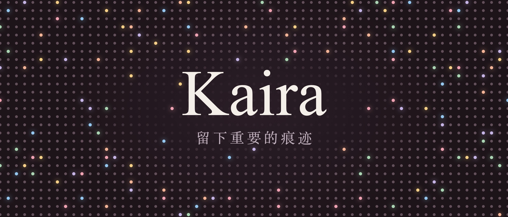

本周
每周，Kaira 会送上一个温柔的问题，并告诉你接下来的事：本周的片刻、想要联系的人，以及即将到来的生日。

留住重要的事：一周、一个片刻、你所爱的人。Kaira 以周为单位呈现你的人生，并温柔提醒你，为重要的事留出空间。
适用于 iOS 17 或更高版本的 iPhone。免费。
Kaira 是一本安静的周记。不必每天都写，只需留下让一周与众不同的事：一次散步、一场交谈、初雪。
每周，Kaira 会送上一个温柔的问题，并告诉你接下来的事：本周的片刻、想要联系的人，以及即将到来的生日。
在年度网格中，留有片刻的每一周都会以它的光的颜色亮起：喜悦、爱、宁静、成长、追忆或冒险。人生周历让你一眼看到生命中的每一周。也可以记录大致的回忆，比如只记得月份或年份。
把你在意的人放在身边。Kaira 会提醒你生日，显示你想联系的时间，并收集共度时光的点子。
如果一切保持现状，你还会经历多少个夏天、周末与满月？你还会见到珍爱的人多少次？这不是计算，而是邀请。
所有数据都保存在你的 iPhone 上。没有账号，没有广告，没有追踪。